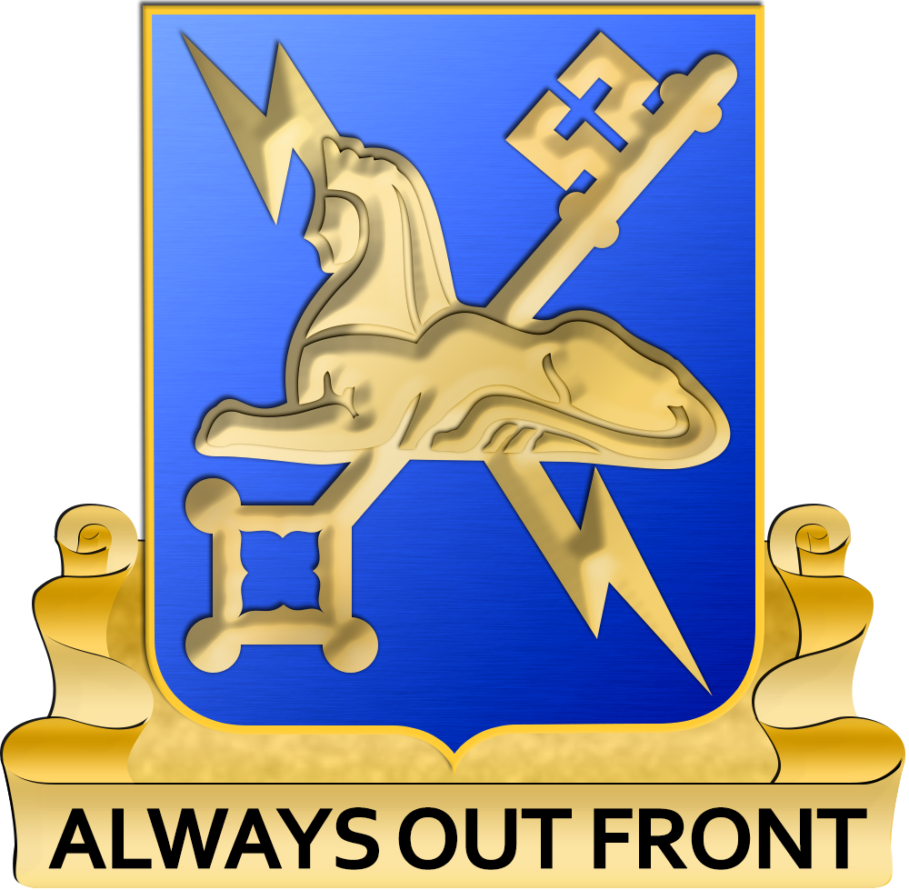

Welcome to My Website
My name is Cory Foraker and I am 29 years old. I am also a husband, IT Technician at Volusia County Schools, a full time student, and an 8 year U.S. Army veteran. I have two dogs, Zeus and Athena. I enjoy playing video games and bolstering my IT skillset in my free time. I obtained my A.S. degree in Computer Information Technology from Daytona State College and am currently pursuing my B.S. degree in Information Technology.

My Experience:
Volusia County Schools
- IT Technician providing Tier 1 support to students, parents and faculty
- Operate as a first point of contact for users to resolve IT related issues
- Utilize role-based access control and least-privilege principles
United States Army:
- Served as both a THAAD Launch Control Station Operator & an Intelligence Analyst
- Attended Basic Leader Course, Combat Lifesavers Course, and will soon be attending Advanced Leader Course & Master Drivers course
- Was awarded Missile Defender of the Year by MDAA
Brown & Brown Insurance
- IT solutions intern who worked with the networking team
- Completed the network standardization of 50+ office locations utilizing Cisco Meraki infrastructure
- Raised over $8,000 for United Way through employee engagement and fundraising initiatives